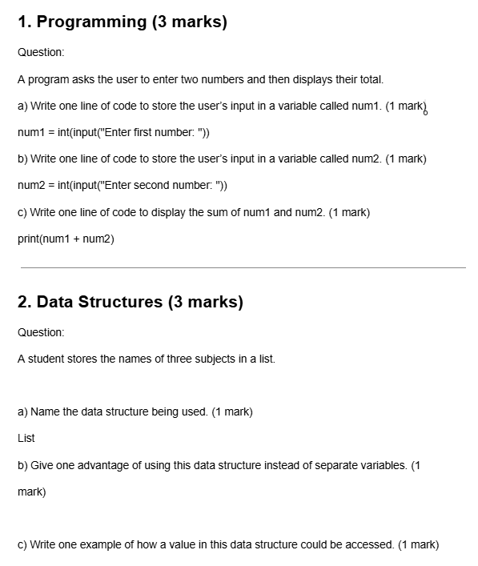

Unit 1 - Online World
This unit explores how online services and internet technologies work.
Evidence

Reflection
This unit was a great introduction to the world of online services and internet technologies. I learned about the different types of online services, such as social media, e-commerce, and cloud computing. I also gained an understanding of how the internet works, including the role of servers, clients, and protocols. I found the coursework to be engaging and informative, and it helped me develop a solid foundation in the online world. Overall, I am excited to continue exploring the digital landscape and applying what I have learned in future units.